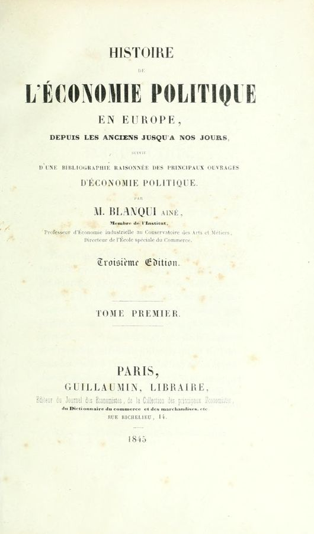
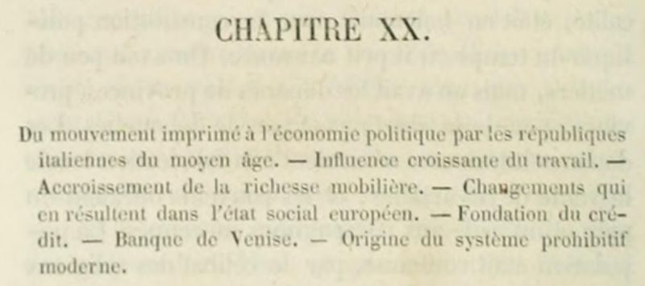
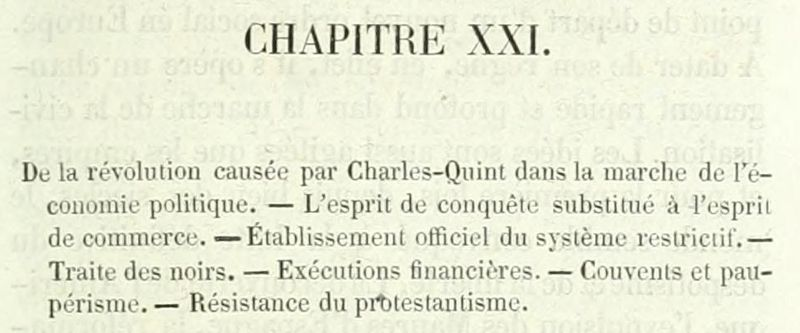

The sumptuary ordinances of 1294 (pp. 225–226)

French: tom. i pp. 225–226, scan. Highlighted: what Lecky summarises.
“We will,” says an ordinance of 1294, “that every sort of people who have not six thousand livres tournois of income shall not use, and shall not be able to use, plate of gold and silver, whether for drinking, or for eating, or for any other use, and that no one, on pain of body and goods, shall practise fraud in this; and of the said silver we will make our coin for the common profit of our kingdom.”
Another ordinance of the same year provided as follows:
“No burgher’s wife shall have a carriage.
“No burgher, man or woman, shall wear green, or grey, or ermine, and they shall rid themselves of those they have within a year from next Easter. They shall not wear, nor be able to wear, gold, nor precious stones, nor crowns of gold or silver.
“Dukes, counts and barons with six thousand livres of land or more may have four robes a year and no more, and their wives as many.
“A knight who has three thousand livres of land may have three pairs of robes a year, and no more; and one of these three robes shall be for summer.
“No one shall give at a great meal more than two dishes and a soup with bacon, without fraud; and if it is a fast-day he may give two herring soups and two dishes.
“It is ordained that no prelate or baron may have a robe for his body costing more than 25 sous tournois the Paris ell.”
Original French
« Nous voulons, dit une ordonnance de 1294, que toute manière de gens qui n’ont six mille livres de rente tournois n’usent et ne puissent user de vaissellement d’or et d’argent, ni pour boire, ni pour manger, ni pour autre usage, et que nul, sous peine de corps et de biens, n’y fasse fraude ; et de l’argent susdit nous voulons faire nos monnaies pour le commun profit de notre royaume. »
Une autre ordonnance de la même année disposait ce qui suit :
« Nulle bourgeoise n’aura char.
« Nul bourgeois ni bourgeoise ne portera vert, ni gris, ni hermines, et se délivreront de ceux qu’ils ont, de Pâques prochaines en un an. Ils ne porteront, ni pourront porter or, ni pierres précieuses, ni couronnes d’or, ni d’argent.
« Les ducs, les comtes, les barons de six mille livres de terres, ou plus, pourront faire quatre robes par an et non plus, et les femmes autant.
« Chevalier qui aura trois mille livres de terre pourra avoir trois paires de robes par an, et non plus ; et sera l’une de ces trois robes pour l’été.
« Nul ne donnera au grand manger que deux mets et un potage au lard, sans fraude ; et s’il est jeûne, il pourra donner deux potages aux harengs et deux mets.
« Il est ordonné que nul prélat ou baron ne puisse avoir robe pour son corps de plus de 25 sous tournois l’aune de Paris. »
Lecky’s summary (“dukes, counts, and barons, who have 6,000 livres rent, may have four robes a year, and their wives as many. Knights with 3,000 livres rent may have three. No member of the middle class may wear any ornament of gold or precious stone, or any dress that was green or grey”) follows Blanqui closely, and “the ordinance (which was issued in 1294)” is Blanqui’s dating; Lecky adds nothing about the table (two dishes and a soup) or the price of cloth. The sentences about the loss of French gold are Blanqui’s comment on p. 226 (“il fallait absolument que le numéraire sortît”, with a little less force than Lecky’s “the greatest evil that could befall the country”, which is Lecky’s gloss on “current notions”). Page 226 of this scan is blurred in places; the passage on gold is only partly legible on the image.
The Florentine officer “charged with repressing the luxury of women” (p. 250)
French: tom. i p. 250, scan. The page is a table of expenditure; the line is read from a blurred image.
Expenses of the republic of Florence, from 1336 to 1338, in Florentine livres, the gold florin at 3 livres 2 sols. … Judge of appeals on the rights of the community … 1,100 · Officer charged with repressing the luxury of women … 1,000 · Officer of the market of Orsanmichele … 1,300 · Office of the soldiers’ pay … 1,000 …
Original French
Dépenses de la république de Florence, de 1336 à 1338, en livres florentines, le florin d’or à 3 livres 2 sols. … Juge des appellations sur les droits de la communauté … 1,100 · Officier chargé de réprimer le luxe des femmes … 1,000 · Officier du marché d’Orto San-Michele … 1,300 · Office de la solde des troupes … 1,000 …
Lecky: “Even in Florence, among the officers of the republic, in the beginning of the fourteenth century, was one especially appointed ‘to repress the luxury of women.’” The phrase matches; the date in Blanqui’s table is 1336–38, which is the first half, not the beginning, of the century. Lecky’s quotation marks mark a translation, not a quotation from the French.
Spain as author of the mercantile system (p. 277)
French: tom. i p. 277, scan, with Blanqui’s footnote on Ustáriz.
… It was then that there took place the first trials of those strange theories whose invention belongs entirely to the Spaniards, and which an economist of their country summed up so naively, two hundred years later, in this remarkable passage: “It is necessary to employ with rigour all the means that can lead us to sell to foreigners more of our products than they will sell us of theirs: that is the whole secret and the only utility of commerce.”
Such is the system which gave birth to the countless wars of which Europe has been the theatre since the accession of Charles V, and which still dominates, without their knowing it, the commercial policy of almost all modern governments. …
¹ Ustáriz, Théorie et pratique du commerce, ch. iv, p. 13 of the French edition. … And yet Ustáriz wrote these lines in 1740, and he had been a minister!
Original French
… C’est alors qu’eurent lieu les premiers essais de ces théories étranges dont l’invention appartient tout entière aux Espagnols, et qu’un économiste de leur pays résumait si naïvement, deux cents ans plus tard, dans ce passage remarquable : « Il est nécessaire d’employer avec rigueur tous les moyens qui peuvent nous conduire à vendre aux étrangers plus de nos productions qu’ils ne nous vendront des leurs : c’est là tout le secret et la seule utilité du commerce. »
Tel est le système qui a donné naissance aux guerres innombrables dont l’Europe a été le théâtre depuis l’avénement de Charles-Quint, et qui domine encore, à leur insu, la politique commerciale de presque tous les gouvernements modernes. …
¹ Ustariz, Théorie et pratique du commerce, chap. iv, p. 13, de l’édition française. … Et cependant Ustariz écrivait ces lignes en 1740, et il avait été ministre !
Lecky’s sentence, that Spain “was the true author of the mercantile theory and of the colonial policy which have been the sources of disastrous wars to every European nation”, is Blanqui’s thesis and almost his wording, and note 164 cites this page for it. Blanqui’s “accession of Charles V” is not Lecky’s phrase; Lecky has dropped the date and widened “Europe” to “every European nation”. The footnote’s quotation from Ustáriz and its date (1740) were read on a clear image; I did not check them against Ustáriz.
Chapter XX: the Italian republics and the economy (pp. 244–270)
French: 3rd ed., tome I, ch. XX, p. 244, scan n275.

Chapter XX. On the impulse given to political economy by the Italian republics of the Middle Ages. — The growing influence of labour. — The increase of movable wealth. — The changes this brought about in the social condition of Europe. — The founding of credit. — The Bank of Venice. — The origin of the modern prohibitive system.
Original French
Chapitre XX. Du mouvement imprimé à l’économie politique par les républiques italiennes du moyen âge. — Influence croissante du travail. — Accroissement de la richesse mobilière. — Changements qui en résultent dans l’état social européen. — Fondation du crédit. — Banque de Venise. — Origine du système prohibitif moderne.
Lecky’s ch. VI note 96 (“M. Blanqui has collected some extremely remarkable evidence of this (Histoire d’Economie Politique, tom. i. pp. 244–270)”) supports his sentence that the Venetians “sketched the first faint outlines” of economic laws. His page range is exactly Blanqui’s chapter XX. On p. 245 (OCR only) Blanqui begins with Florence in 1282 governed by “a magistracy composed exclusively of merchants”, the Priors of the Arts.
Chapter XXI: Charles V, “the spirit of conquest in place of the spirit of commerce” (pp. 271–284)
French: 3rd ed., tome I, ch. XXI, p. 271, scan n302.

Chapter XXI. On the revolution caused by Charles V in the course of political economy. — The spirit of conquest put in place of the spirit of commerce. — The official establishment of the restrictive system. — The slave trade. — Financial executions. — Convents and pauperism. — The resistance of Protestantism.
Charles V, a child of Flanders, a German emperor and a Spanish monarch, combined in the highest degree everything the Italians hated. …
Original French
Chapitre XXI. De la révolution causée par Charles-Quint dans la marche de l’économie politique. — L’esprit de conquête substitué à l’esprit de commerce. — Établissement officiel du système restrictif. — Traite des noirs. — Exécutions financières. — Couvents et paupérisme. — Résistance du protestantisme.
Charles-Quint, enfant de Flandre, empereur allemand et monarque espagnol, réunissait au plus haut degré toutes les antipathies italiennes. …
Lecky’s ch. VI note 159 (“See Blanqui, Hist. d’Économie Politique, tom. i. pp. 271–284, where the whole subject of the political economy of Charles V. is admirably treated”) is exactly Blanqui’s chapter XXI. Its heads (conquest replacing commerce, convents and pauperism) are the themes of Lecky’s own paragraph on Spain’s decline, where “a warlike and idle nobility took the place of the old merchant nobles of Italy”. Lecky’s p. 277, in the same chapter, is quoted above.
Editor’s notes on this page
Note 83 is accurate: pp. 225–226 print the ordinance of 1294 on robes and tables and the ordinance on the wives of burghers, and Blanqui goes on, as Lecky says, to argue that the French king was trying to keep gold in the kingdom. Note 85 is accurate as to the officer “charged with repressing the luxury of women”, but Blanqui’s table is the Florentine budget of 1336–1338; Lecky puts the office “in the beginning of the fourteenth century”.
Further down the rabbit hole
Sources that Lecky cites in the notes next to the ones that cite this page.
- Macpherson, Annals of CommerceMacpherson’s 1346 consul footnote is not about English consuls
- M’Culloch, Principles of Political Economy and the Wealth of NationsFoundlings, Calvin on interest, and Scotland’s last serfs, in a Victorian economist’s footnotes
- Cibrario, Della economia politica del medio evoTurin, 1388: a heretic who held that the Devil made Adam and Eve, and that usury was no sin
- Paramo, De origine et progressu officii sanctae inquisitionisWhy the dead are tried for heresy
- Renan, Averroès et l’averroïsmePietro d’Abano, the stars and the prophets: and were his bones burned or a dummy?
- Buckle, History of Civilization in EnglandWeather and credulity, and the Scottish clergy’s Devil who had been studying for five thousand years


Backlinks
Every place in Rationalism in Europe that links to this page (generated automatically when the site is built).